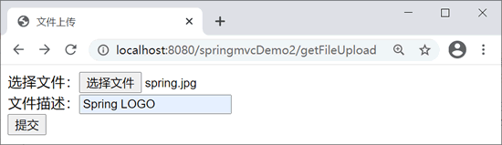
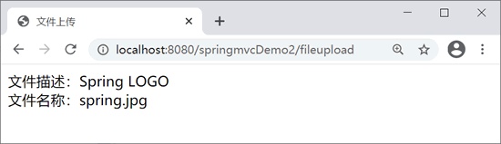
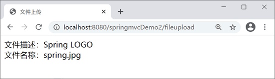
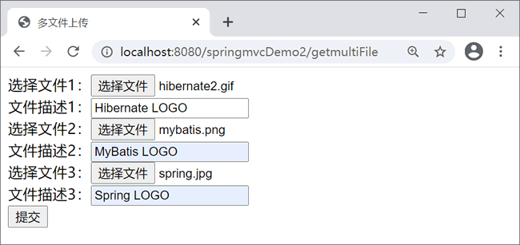
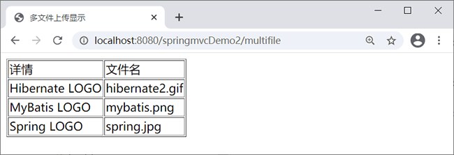

首页 > 编程笔记
Spring MVC文件上传
Spring MVC 框架的文件上传基于 commons-fileupload 组件，并在该组件上做了进一步的封装，简化了文件上传的代码实现，取消了不同上传组件上的编程差异。
MultpartiResolver 接口有以下两个实现类：
MultpartiResolver 接口具有以下方法。
下面我们使用 CommonsMultipartResolver 来完成文件上传，分为单文件上传和多文件上传两部分介绍。
Maven 项目在 pom.xml 文件中添加以下依赖。
fleUpload.jsp 代码如下。
表单的 enctype 属性指定的是表单数据的编码方式，该属性有以下 3 个值。
由上面 3 个属性的解释可知，在基于表单上传文件时 enctype 的属性值应为 multipart/form-data。
MultipartResolver接口
在 Spring MVC 中实现文件上传十分容易，它为文件上传提供了直接支持，即 MultpartiResolver 接口。MultipartResolver 用于处理上传请求，将上传请求包装成可以直接获取文件的数据，从而方便操作。MultpartiResolver 接口有以下两个实现类：
- StandardServletMultipartResolver：使用了 Servlet 3.0 标准的上传方式。
- CommonsMultipartResolver：使用了 Apache 的 commons-fileupload 来完成具体的上传操作。
MultpartiResolver 接口具有以下方法。
| 名称 | 作用 |
|---|---|
| byte[] getBytes() | 以字节数组的形式返回文件的内容 |
| String getContentType() | 返回文件的内容类型 |
| InputStream getInputStream() | 返回一个InputStream，从中读取文件的内容 |
| String getName() | 返回请求参数的名称 |
| String getOriginalFillename() | 返回客户端提交的原始文件名称 |
| long getSize() | 返回文件的大小，单位为字节 |
| boolean isEmpty() | 判断被上传文件是否为空 |
| void transferTo(File destination) | 将上传文件保存到目标目录下 |
下面我们使用 CommonsMultipartResolver 来完成文件上传，分为单文件上传和多文件上传两部分介绍。
单文件上传
1. 导入 jar 文件
文件上传使用 Apache Commons FileUpload 组件，需要导入 commons-io-2.4.jar 和 commons-fileupload-1.2.2.jar 两个 jar 文件（可在 Apache 官网下载）。Maven 项目在 pom.xml 文件中添加以下依赖。
<dependency>
<groupId>commons-io</groupId>
<artifactId>commons-io</artifactId>
<version>2.4</version>
</dependency>
<dependency>
<groupId>commons-fileupload</groupId>
<artifactId>commons-fileupload</artifactId>
<version>1.2.2</version>
</dependency>
2. 配置 MultipartResolver
使用 CommonsMultipartReslover 配置 MultipartResolver 解析器，在 springmvc-servlet.xml 中添加代码如下。
<!-- 配置MultipartResolver，用于上传文件，使用spring的CommonsMultipartResolver -->
<bean id="multipartResolver"
class="org.springframework.web.multipart.commons.CommonsMultipartResolver">
<property name="maxUploadSize" value="5000000" />
<property name="defaultEncoding" value="UTF-8" />
</bean>
- defaultEncoding：请求的编码格式，默认为 ISO-8859-1，此处设置为 UTF-8（注：defaultEncoding 必须和 JSP 中的 pageEncoding 一致，以便正确读取表单的内容）。
- maxUploadSize：上传文件大小上限，单位为字节。
3. 编写文件上传表单页面
负责文件上传表单的编码类型必须是“multipart/form-data”类型。fleUpload.jsp 代码如下。
<%@ page language="java" contentType="text/html; charset=UTF-8"
pageEncoding="UTF-8"%>
<!DOCTYPE html PUBLIC "-//W3C//DTD HTML 4.01 Transitional//EN" "http://www.w3.org/TR/html4/loose.dtd">
<html>
<head>
<meta http-equiv="Content-Type" content="text/html; charset=UTF-8">
<title>文件上传</title>
</head>
<body>
<form action="${pageContext.request.contextPath }/fileupload"
method="post" enctype="multipart/form-data">
选择文件：<input type="file" name="myfile"><br>
文件描述：<input type="text" name="description"><br>
<input type="submit" value="提交">
</form>
</body>
</html>
基于表单的文件上传需要使用 enctype 属性，并将它的值设置为 multipart/form-data，同时将表单的提交方式设置为 post。表单的 enctype 属性指定的是表单数据的编码方式，该属性有以下 3 个值。
- application/x-www-form-urlencoded：这是默认的编码方式，它只处理表单域里的 value 属性值。
- multipart/form-data：该编码方式以二进制流的方式来处理表单数据，并将文件域指定文件的内容封装到请求参数里。
- text/plain：该编码方式只有当表单的 action 属性为“mailto：”URL 的形式时才使用，主要适用于直接通过表单发送邮件的方式。
由上面 3 个属性的解释可知，在基于表单上传文件时 enctype 的属性值应为 multipart/form-data。
4. 创建POJO类
创建 net.biancheng.opjo 包，在该包下创建 FileDomain 类，在该 POJO 类中声明一个 MultipartFile 类型的属性封装被上传的文件信息，属性名与文件选择页面 filleUpload.jsp 中的 file 类型的表单参数名 myfile 相同，代码如下。
package net.biancheng.po;
import org.springframework.web.multipart.MultipartFile;
public class FileDomain {
private String description;
private MultipartFile myfile;
/** 省略setter和getter参数*/
}
5. 编写控制器
创建 net.biancheng.controller 包，在该包下创建 FileUploadController 控制类，具体代码如下。
package net.biancheng.controller;
import java.io.File;
import javax.servlet.http.HttpServletRequest;
import org.apache.commons.logging.Log;
import org.apache.commons.logging.LogFactory;
import org.springframework.stereotype.Controller;
import org.springframework.web.bind.annotation.ModelAttribute;
import org.springframework.web.bind.annotation.RequestMapping;
import net.biancheng.po.FileDomain;
@Controller
public class FileUploadController {
// 得到一个用来记录日志的对象，这样在打印信息时能够标记打印的是哪个类的信息
private static final Log logger = LogFactory.getLog(FileUploadController.class);
@RequestMapping("getFileUpload")
public String getFileUpload() {
return "fileUpload";
}
/**
* 单文件上传
*/
@RequestMapping("/fileupload")
public String oneFileUpload(@ModelAttribute FileDomain fileDomain, HttpServletRequest request) {
/*
* 文件上传到服务器的位置“/uploadfiles”,该位置是指 workspace\.metadata\.plugins\org.eclipse
* .wst.server.core\tmp0\wtpwebapps, 发布后使用
*/
String realpath = request.getServletContext().getRealPath("uploadfiles");
String fileName = fileDomain.getMyfile().getOriginalFilename();
File targetFile = new File(realpath, fileName);
if (!targetFile.exists()) {
targetFile.mkdirs();
}
// 上传
try {
fileDomain.getMyfile().transferTo(targetFile);
logger.info("成功");
} catch (Exception e) {
e.printStackTrace();
}
return "showFile";
}
}
6. 创建成功显示页面
showFile.jsp 代码如下。
<%@ page language="java" contentType="text/html; charset=UTF-8"
pageEncoding="UTF-8"%>
<!DOCTYPE html PUBLIC "-//W3C//DTD HTML 4.01 Transitional//EN" "http://www.w3.org/TR/html4/loose.dtd">
<html>
<head>
<meta http-equiv="Content-Type" content="text/html; charset=UTF-8">
<title>文件上传</title>
</head>
<body>
文件描述：${fileDomain.description }
<br>
<!-- fileDomain.getMyFile().getOriginalFilename()-->
文件名称：${fileDomain.myfile.originalFilename }
</body>
</html>
7. 测试文件上传
访问地址：http://localhost:8080/springmvcDemo2/getFileUpload，运行结果如下。

fileUpload.jsp 页面

showFile.jsp 页面
fileUpload.jsp 页面

showFile.jsp 页面
多文件上传
在以上代码的基础上，实现 Spring MVC 多文件上传。1. 创建 JSP 页面
创建 multiFiles.jsp 页面，在该页面中使用表单上传多个文件。代码如下。
<%@ page language="java" contentType="text/html; charset=UTF-8"
pageEncoding="UTF-8"%>
<%@ taglib prefix="fm" uri="http://www.springframework.org/tags/form"%>
<!DOCTYPE html PUBLIC "-//W3C//DTD HTML 4.01 Transitional//EN" "http://www.w3.org/TR/html4/loose.dtd">
<html>
<head>
<meta http-equiv="Content-Type" content="text/html; charset=UTF-8">
<title>多文件上传</title>
</head>
<body>
<form action="${pageContext.request.contextPath }/multifile"
method="post" enctype="multipart/form-data">
选择文件1：<input type="file" name="myfile"><br>
文件描述1：<input type="text" name="description"><br>
选择文件2：<input type="file" name="myfile"><br>
文件描述2：<input type="text" name="description"><br>
选择文件3：<input type="file" name="myfile"><br>
文件描述3：<input type="text" name="description"><br>
<input type="submit" value="提交">
</form>
</body>
</html>
2. 创建POJO类
创建 MultiFileDomain 类，上传多文件时用于封装文件信息，代码如下。
package net.biancheng.po;
import java.util.List;
import org.springframework.web.multipart.MultipartFile;
public class MultiFileDomain {
private List<String> description;
private List<MultipartFile> myfile;
public List<String> getDescription() {
return description;
}
public void setDescription(List<String> description) {
this.description = description;
}
public List<MultipartFile> getMyfile() {
return myfile;
}
public void setMyfile(List<MultipartFile> myfile) {
this.myfile = myfile;
}
}
3. 添加多文件上传处理方法
在 FileUploadController 控制器类中添加多文件上传处理方法 multifile，具体代码如下。
@RequestMapping("/getmultiFile")
public String getmultiFile() {
return "multiFiles";
}
/**
* 多文件上传
*/
@RequestMapping("/multifile")
public String multiFileUpload(@ModelAttribute MultiFileDomain multiFileDomain, HttpServletRequest request) {
String realpath = request.getServletContext().getRealPath("uploadfiles");
File targetDir = new File(realpath);
if (!targetDir.exists()) {
targetDir.mkdirs();
}
List<MultipartFile> files = multiFileDomain.getMyfile();
System.out.println("files"+files);
for (int i = 0; i < files.size(); i++) {
MultipartFile file = files.get(i);
String fileName = file.getOriginalFilename();
File targetFile = new File(realpath, fileName);
// 上传
try {
file.transferTo(targetFile);
} catch (Exception e) {
e.printStackTrace();
}
}
return "showMulti";
}
4. 创建成功显示页面
创建多文件上传成功显示页面 showMulti.jsp，具体代码如下：
<%@ page language="java" contentType="text/html; charset=UTF-8"
pageEncoding="UTF-8"%>
<%@taglib uri="http://java.sun.com/jsp/jstl/core" prefix="c"%>
<!DOCTYPE html PUBLIC "-//W3C//DTD HTML 4.01 Transitional//EN" "http://www.w3.org/TR/html4/loose.dtd">
<html>
<head>
<meta http-equiv="Content-Type" content="text/html; charset=UTF-8">
<title>多文件上传显示</title>
</head>
<body>
<table border="1px">
<tr>
<td>详情</td>
<td>文件名</td>
</tr>
<!-- 同时取两个数组的元素 -->
<c:forEach items="${multiFileDomain.description}" var="description"
varStatus="loop">
<tr>
<td>${description}</td>
<td>${multiFileDomain.myfile[loop.count-1].originalFilename}</td>
</tr>
</c:forEach>
<!-- fileDomain.getMyfile().getOriginalFilename() -->
</table>
</body>
</html>
5. 测试文件上传
访问地址：http://localhost:8080/springmvcDemo2/getmultiFile，运行结果如下。

multiFiles.jsp页面
multiFiles.jsp页面

showMulti.jsp页面
showMulti.jsp页面
关注公众号「站长严长生」，在手机上阅读所有教程，随时随地都能学习。内含一款搜索神器，免费下载全网书籍和视频。

微信扫码关注公众号